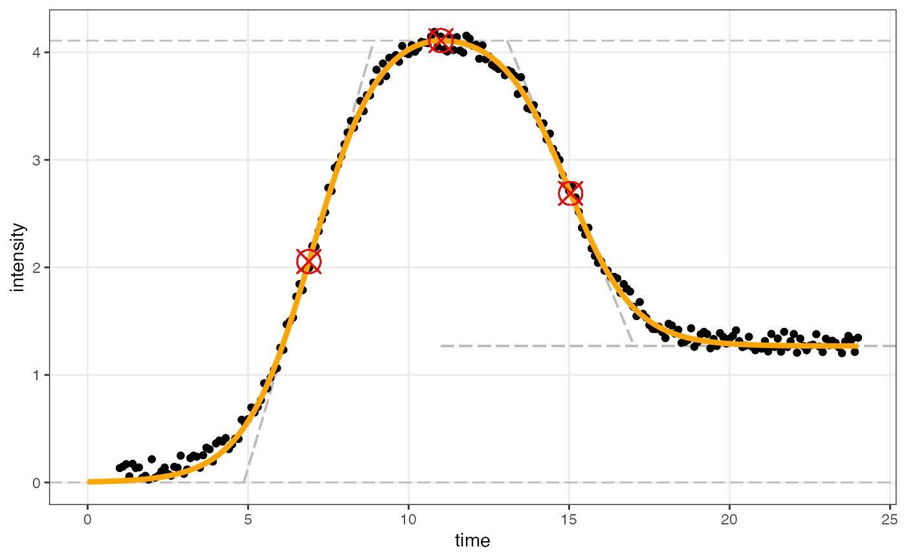
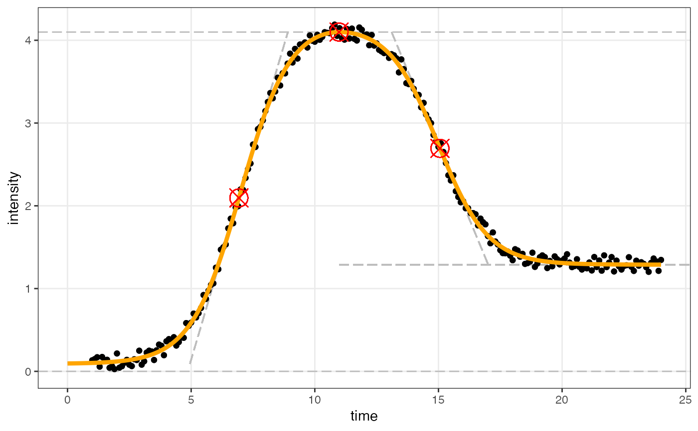

Generates figures using ggplot that shows the input data and the fitted curves.
Usage
figureModelCurves(
dataInput,
sigmoidalFitVector = NULL,
doubleSigmoidalFitVector = NULL,
showParameterRelatedLines = FALSE,
xlabelText = "time",
ylabelText = "intensity",
fittedXmin = 0,
fittedXmax = NA,
use_h0 = FALSE
)Arguments
- dataInput
A data frame or a list contatining the dataframe. The data frame should be composed of at least two columns. One represents time, and the other represents intensity. The data should be normalized with the normalize data function sicegar::normalizeData() before imported into this function.
- sigmoidalFitVector
the output of the sicegar::sigmoidalFitFunction(), or the augmented version of the output generated by the help of sicegar::parameterCalculation(), which contains parameters related with sigmoidal model. Default is NULL.
- doubleSigmoidalFitVector
the output of the sicegar::doubleSigmoidalFitFunction(), or the augmented version of the output generated by the help of sicegar::parameterCalculation(), which contains parameters related with double sigmoidal model. Default is NULL.
if equal to TRUE, figure will show parameter related lines on the curves. Default is FALSE.
- xlabelText
the x-axis name; with default "time"
- ylabelText
the y-axis name; with default "intensity"
- fittedXmin
the minimum of the fitted data that will be plotted (Default 0)
- fittedXmax
the maximum of the fitted data that will be plotted (Default timeRange)
- use_h0
Boolean which decides whether to fix h0 at 0 (FALSE, default) or to freely estimate h0 (TRUE)
Examples
# Example w/ h0 fixed at zero
time <- seq(1, 24, 0.1)
#simulate intensity data and add noise
noise_parameter <- 0.2
intensity_noise <- runif(n = length(time), min = 0, max = 1) * noise_parameter
intensity <- sicegar::doublesigmoidalFitFormula(time,
finalAsymptoteIntensityRatio = .3,
maximum = 4,
slope1Param = 1,
midPoint1Param = 7,
slope2Param = 1,
midPointDistanceParam = 8)
intensity <- intensity + intensity_noise
dataInput <- data.frame(intensity = intensity, time = time)
normalizedInput <- sicegar::normalizeData(dataInput, dataInputName = "sample001")
# Double sigmoidal fit
doubleSigmoidalModel <- sicegar::multipleFitFunction(dataInput = normalizedInput,
model = "doublesigmoidal",
n_runs_min = 20,
n_runs_max = 500,
showDetails = FALSE)
doubleSigmoidalModel <- sicegar::parameterCalculation(doubleSigmoidalModel)
fig01 <- sicegar::figureModelCurves(dataInput = normalizedInput,
doubleSigmoidalFitVector = doubleSigmoidalModel,
showParameterRelatedLines = TRUE)
print(fig01)

# Example w/ h0 free
# using the same data as above `dataInput`
normalizedInput <- sicegar::normalizeData_h0(dataInput, dataInputName = "sample001")
# Double sigmoidal fit
doubleSigmoidalModel <- sicegar::multipleFitFunction_h0(dataInput = normalizedInput,
model = "doublesigmoidal",
n_runs_min = 20,
n_runs_max = 500,
showDetails = FALSE)
doubleSigmoidalModel <- sicegar::parameterCalculation_h0(doubleSigmoidalModel)
fig02 <- sicegar::figureModelCurves(dataInput = normalizedInput,
doubleSigmoidalFitVector = doubleSigmoidalModel,
showParameterRelatedLines = TRUE, use_h0 = TRUE)
print(fig02)
